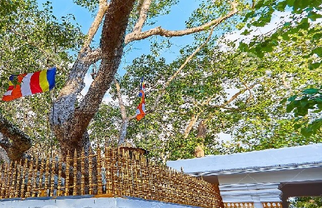
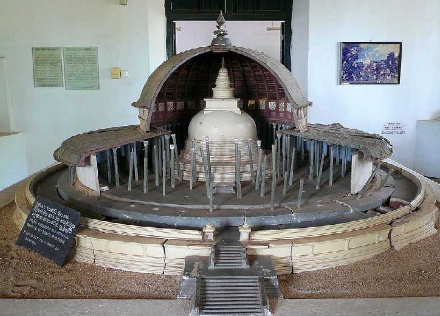
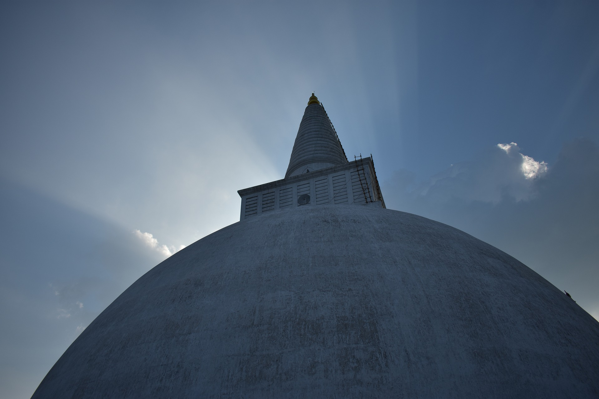
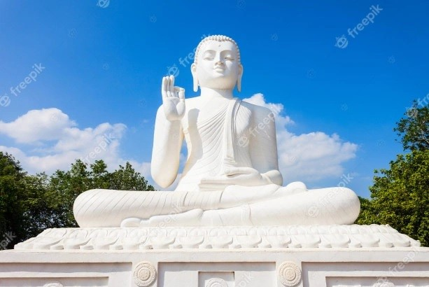

Anuradhapura is a city in Anuradhapura District of North Central Province of srilanka. This sacred city was established around a cutting from the 'tree of enlightenment', the Buddha's fig tree, brought there in the 3rd century B.C. by Sanghamitta, the founder of an order of Buddhist nuns. Anuradhapura, a Ceylonese political and religious capital that flourished for 1,300 years, was abandoned after an invasion in 993. Hidden away in dense jungle for many years, the splendid site, with its palaces, monasteries and monuments, is now accessible once again.. It is situated along the Aruvi Aru River. The old section of Anuradhapura, now preserved as an archaeological park and designated a UNESCO World Heritage site in 1982, is the best known of Sri Lanka’s ancient ruined cities. In the immediate vicinity are huge bell-shaped dagobas (Buddhist commemorative shrines, or stupas) built of small sun-dried bricks as well as temples, sculptures, palaces, and ancient drinking-water reservoirs.
Sri Maha Bodhi
Jaya Sri Maha Bodhi is a sacred fig tree in the Mahamewna Gardens, Anuradhapura. A sacred place for Buddhists on Sri Lanka. The southern branch of this sacred tree in Bodhgaya was ceremoniously brought to Sri Lanka by Arahant Sanghamitta MahaTheree in 236 BC, with the patronage of Emperor Dharmasoka. King Devanampiyatissa planted this Bodhi tree in his Royal Park ‘Maha Meghavana Udyanaya’ in Anuradhapura, under the guidance of Arahant Mihindu Maha Thero. Since then, this highly sacred Bodhi comparable to the living Buddha dwells there shining with glory. The Jaya Sri Maha Bodhi of Anuradhapura is the oldest living tree of the whole world with a written history.
Archaeological Museum Anuradhapura
Established in the year 1947 by the efforts of Dr Senarath Paranavithana, the archaeological museum or Puravidu Bhavana of Anuradhapura holds some exciting artefacts, carvings and ancient everyday items found after excavations in Anuradhapura and other historical sites around Sri Lanka. It is a rich source of information on the heritage and culture of the place. The museum displays artefacts connected with ancient capital located at Polonnaruwa which are worth watching, especially the miniature models of buildings, which are currently in ruins at Polonnaruwa. Many objects kept in the Anuradhapura Archaeological Museum date back to the pre-Christian period and reflect the grandeur of a bygone era when Sinhalese civilization was at its peak. Apart from that, the museum has some precious Buddha statues, inscriptions, coins, drawings and antiques. Both the interior and exterior parts of the museum display historical items.
Ruwanweli Maha Seya
Ruwanweli Maha Seya is a prominent Buddhist stupa situated in the ancient historic city of Anuradhapura. It was built by King Dutugemunu in 2nd century BC. It is regarded as a highly sacred and important religious site by Buddhists from around the world. Ruwanweli Maha Seya is also known by the names of “Swarnamali Chaitya”, “Rathnamali Chaitya” and “Mahathupa”. It belongs to the “Atamasthana” of Anuradhapura. It stands along with the Jaya Sri Maha Bodhi, as one of the oldest and most sacred sites for Buddhists.Also known as the Mahathupa, Swarnamali Chaitya, Suvarnamali Mahaceti and Rathnamali Dagaba, the stupa is an engineering feast and a testimony to the engineering capabilities of the ancient Sri Lankans.
Sigiriya Rock Fortress

According to inscriptions found in the caves which honeycomb the base of the rock fortress, Sigiriya served as a place of religious retreat as far back as the third century BC, when Buddhist monks established refuge in the locale. It wasn’t until the fifth century AD, however, that Sigiriya rose briefly to supremacy in Sri Lanka, following the power struggle which succeeded the reign of Dhatusena (455-473) of Anuradhapura. King Dhatusena had two sons, Mogallana, by one of the most desired and finest of his queens, and Kassapa, by a less significant consort. Upon hearing that Mogallana had been declared heir to the throne, Kassapa rebelled, driving Mogallana into exile in India and imprisoning his father, King Dhatusena. The legend of Dhatusena’s subsequent demise offers an enlightening illustration of the importance given to water in early Sinhalese civilization.
Mihinthalaya
In the 3rd century BC, area of Mihintale (mihinthalaya) was a thick jungle area inhibited by wild animals and was a hunting ground reserved for the royals. All this changed in 250 BC when the son of the Indian Emperor Asoka, Mahinda Maha Thero arrived at the Missaka Pauwa to meet king Devanampiyatissa for the first time and asked the famous questions to decide whether he is intelligent enough to understand the philosophy of the Buddha.Initially Mahinda Maha Thero’s residence, but later Mihintale (mihinthalaya) became a main center for Theravada Buddhism and is considered the cradle of Buddhism in Sri Lanka and was developed throughout the millennia by many kings as massive monastic complex complete with hospitals for the sick bhikkhus.Mihinthale is a collection of four mountains each about 1000 feet in height.